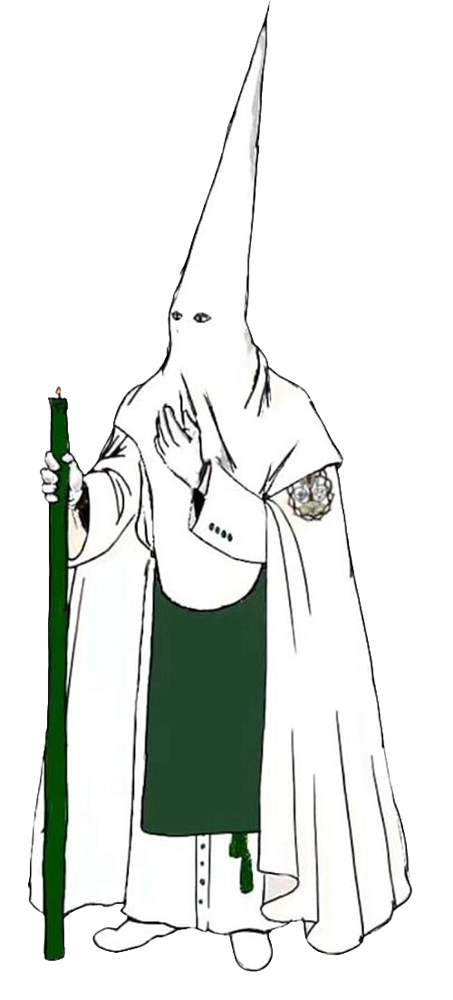

Hermano Mayor
Alberto Portillo Roa
Alberto Portillo Roa
Querido visitante, sea bienvenido a esta la página web de nuestra Hermandad.
A través de este portal queremos hacerle llegar toda la información y la actualidad de nuestra joven Hermandad, deseando que la misma sirva como punto de encuentro entre nuestros hermanos y para todos aquellos que, por devoción a nuestros Sagrados Titulares, estén interesados en conocernos.
El espíritu de este medio es, principalmente, facilitar la información diaria de nuestra corporación a todos aquellos hermanos que se encuentran lejos de nuestra ciudad, haciendo uso de la facultad que las nuevas tecnologías tienen para acercarnos aún estando en la distancia. A través de esta página los hermanos podréis realizar todo tipo de gestiones, así como encontrar toda la información relativa a nuestra Hermandad, desde su historia hasta su patrimonio, pasando por la labor que realizamos al servicio de la Iglesia en general y de nuestra propia Parroquia de Fátima en particular.
Por todo ello, y por cualquiera que fuere el interés por el que se llegue a esta página web, reitero mi bienvenida a todos. Sepan que la Hermandad de Jesús de la Lealtad Despojado está a disposición de todo aquél que solicite su ayuda.
Reciba un fraternal abrazo en Cristo Despojado y en su Bendita Madre de la Pureza
Una historia joven
Un grupo de jóvenes impulsa una nueva cofradía en Cáceres.
La Hermandad queda erigida el 8 de noviembre en la Parroquia de Santiago el Mayor.
Se presenta el boceto del Señor y San Juan Evangelista se incorpora como cotitular.
Nuestro Padre Jesús de la Lealtad Despojado es bendecido el 9 de octubre y trasladado al Oratorio de San Pedro de Alcántara.
Procesiona por primera vez el Martes Santo. En octubre se traslada a la Parroquia de Fátima.
Se integra la Cofradía de Fátima. María Santísima de la Pureza llega a Cáceres y es bendecida el 8 de diciembre.
Nace la revista anual Fides ; se estrena la corona de Fátima y la Virgen de la Pureza realiza su primera salida en la Magna Mariana.
Se adopta el costal para portar los pasos, conforme al acuerdo tomado en diciembre de 2024.
Junta de Gobierno
Alberto Portillo Roa
Jaime Heras Cortijo
Alejandro Vaquero Marco
Juan Pedro
Javier Saavedra Nacarino
Carlos Javier García Jiménez
Francisco Mogena Pilo
Javier Martínez Caldera

Hábito nazareno
Túnica de sarga de color blanco con botonadura verde botella, ceñida con cíngulo de color verde. Escapulario verde botella. Antifaz blanco de un metro, ceñido a la altura del hombro, semicircular a la altura del pecho cuatro centímetros por encima del ombligo. Capa de color blanco, con el escudo de la hermandad en el lado izquierdo. Guantes blancos y zapatillas de lona blanca. La medalla de la Hermandad pende del cuello, por debajo del antifaz. Los hermanos infantiles sustituyen el capuchón y la capa por capelina.